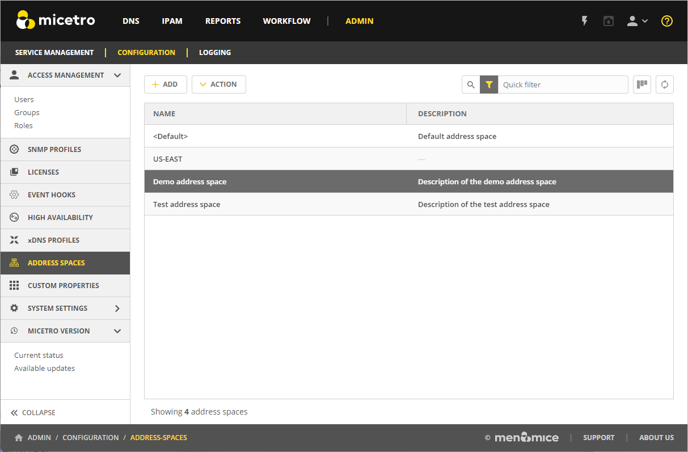
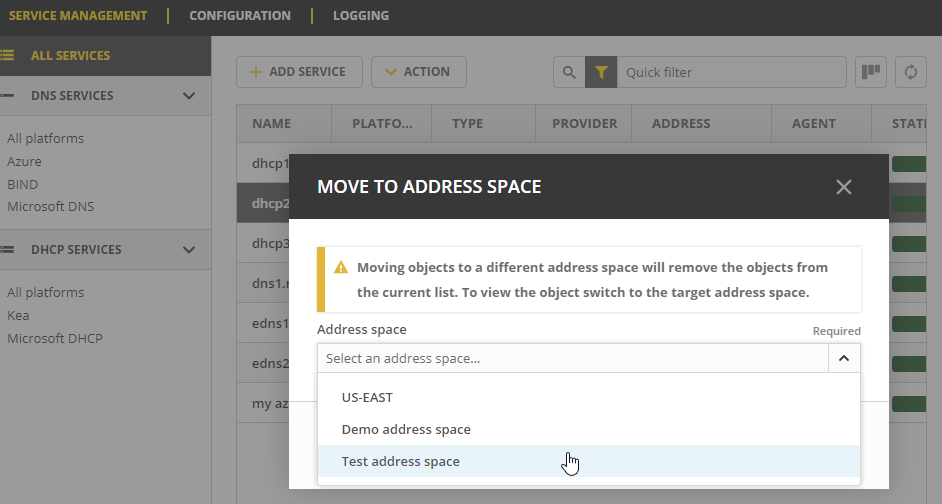

Address Space Management
Multiple Address Spaces
Note
For managing address spaces through the Management Console, see Address Space Management - (Management Console, obsolete).
Micetro supports multiple address spaces.
Each address space instance contains its own set of DNS servers, DNS zones, DHCP servers, DHCP scopes, IP Address ranges (including the IPv4 and IPv6 root ranges), IP address entries, and folders.
Note
Changes to data in one address space do not affect data in any other address space.
Items shared between address spaces are:
users, groups, and roles
custom property definitions (see Custom Properties)
Address Space Management
Users with sufficient permissions are allowed to create, modify, or delete address spaces as well as setting access privileges for existing address spaces.
Go to .
{kind=link}
To create a new address space, click Add at the top of the view, and then enter the name and description for the address space.
To edit the name or description for an address space, select the address space, and then select Edit address space on the Action menu. You can also select this option on the Row menu (…).
To delete an address space, select the address space, and then select Remove address space on the Action menu. You can also select this option on the Row menu (…).
Danger
When you delete an address space, all objects contained within the address space are removed (DNS servers, DHCP servers, IP address ranges, IP address entries, and folders). This action cannot be undone.
To see and edit the access controls for an address space, select the address space, and then select Access on the Action menu. You can also select this option on the Row menu (…).
Note
The first address space is always named <default>. It is not possible to rename or delete the <default> address space.
The <default> address space is the only address space that shows AD sites if AD Site and Subnet integration is enabled.
Moving Objects to a Different Address Space
You can move DNS servers, DHCP servers, and IP Address ranges between address spaces. When an object is moved between address spaces, all properties for the object are retained, including its access settings and change history. You must have the relevant administrator privileges to move objects to a different address space.
To move an object:
Select the object you want to move, and then select Move to address space on the Action menu. You can also select this option on the Row menu (…).
Select a different address space in the dropdown list, and then click Confirm.

{kind=link}
Note
Moving servers in an xDNS profile to separate address spaces, is NOT supported in the Web app. This is also not possible for DHCP servers in a failover relationship.